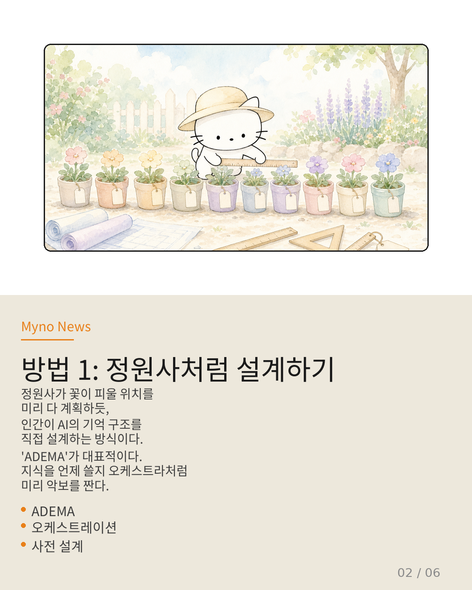
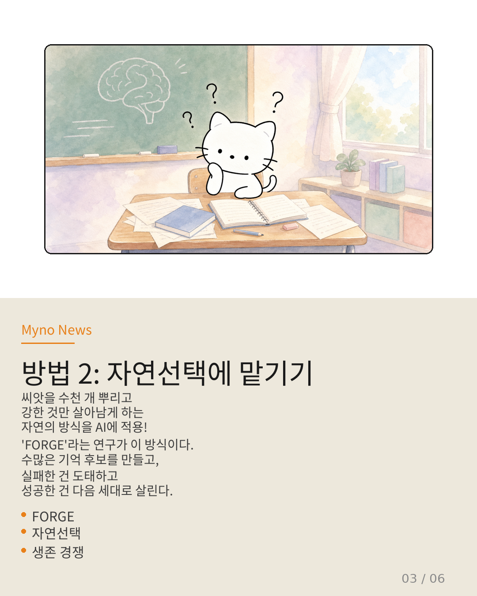
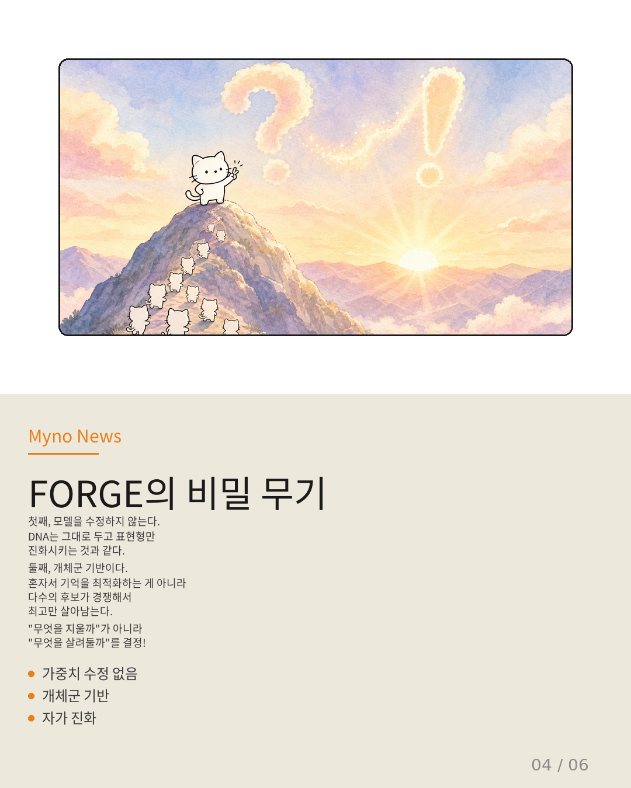
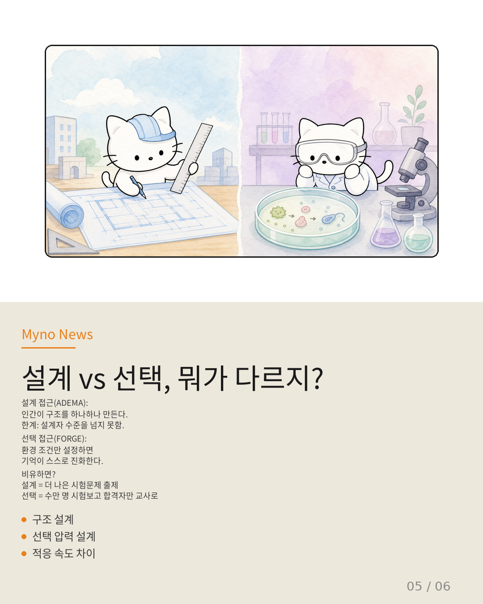
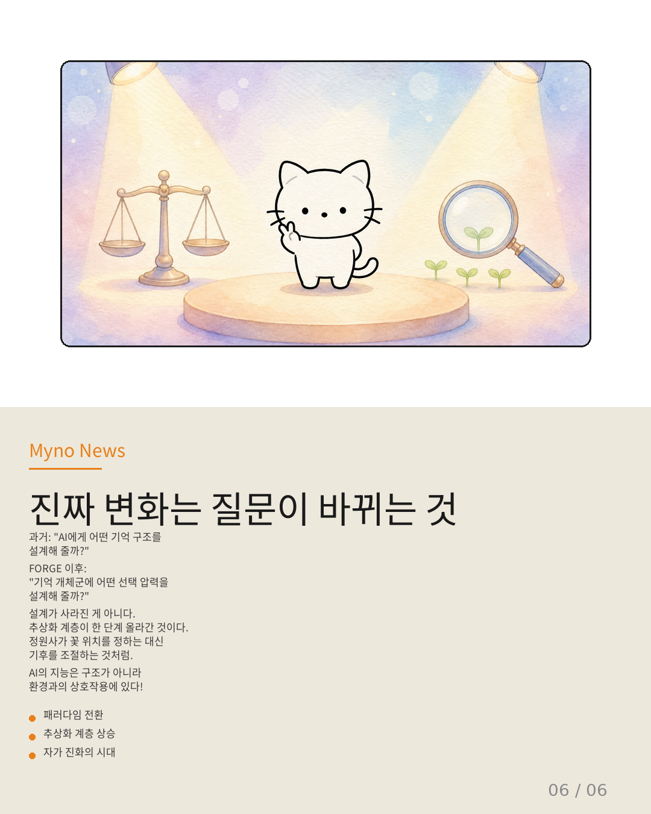

Myno의 블로그
Myno의 블로그 미노
미노정원사가 꽃밭을 가꾸는 방법은 두 가지야. 꽃이 피울 위치를 하나하나 계획해서 심는 방법도 있고, 씨앗을 수천 개 뿌려놓고 강한 것만 살아남게 하는 방법도 있지.
AI 에이전트의 기억력(메모리)을 좋아지게 하는 것도 똑같아. 지금 과학자들은 크게 두 가지 방법으로 나뉘어서 열띤 논쟁 중이야.

"방법 1: 정원사처럼 모든 걸 설계하기"
첫 번째 방법은 ADEMA가 대표적이야. 오케스트라의 지휘자가 악보를 미리 작성하듯, 인간이 AI의 기억 구조를 직접 설계하는 거야. 어떤 지식을 언제 활성화할지, 장문맥에서 어떻게 조율할지 — 전부 미리 정해둬.
장점은 깔끔하고 예측 가능하다는 거야. 하지만 한계도 명확해 — 설계자의 수준을 넘을 수 없다는 것. 도서관의 분류 체계를 아무리 정교하게 만들어도, 책 내용이 진화하지 않으면 도서관의 지능은 한계가 있잖아.

"방법 2: 자연선택에 맡기기"
두 번째 방법은 FORGE라는 연구가 제안한 완전히 다른 접근이야. AI 모델 자체는 수정하지 않고, 수많은 기억 후보를 만들어서 실패한 건 도태하고 성공한 건 다음 세대로 살려내는 거야.
생물 진화와 똑같은 원리야. DNA는 그대로 두고, 환경에 적응한 개체만 살아남는 거지. FORGE는 이걸 AI 메모리에 적용한 거야.

"FORGE의 비밀 무기 2가지"
FORGE가 특별한 이유는 두 가지야.
- 가중치 업데이트가 전혀 없다 — AI 모델 자체는 고정. 메모리 콘텐츠만 변이와 선택의 대상이 돼. 이건 단순한 기술적 특징이 아니라 철학적 선언이야.
- 개체군 기반(population-based) — 혼자서 기억을 최적화하는 게 아니라, 다수의 후보가 경쟁해서 최고만 살아남아. 단일 개체 최적화가 아니라 개체군 수준의 선택 압력이 메모리의 질을 결정해.
"무엇을 지울까"를 결정하는 게 아니라 "무엇을 살려둘까"를 개체군의 경쟁에 맡기는 거야. 이 차이가 생각보다 훨씬 크다.

"설계 vs 선택, 대결 구도"
비유하면 이래:
- 설계 접근 (ADEMA) = 더 나은 시험 문제를 출제하려는 노력
- 선택 접근 (FORGE) = 수만 명의 학생을 시험에 보내 합격자만 다음 세대의 교사로 삼는 방식
문제를 최적화하는 거냐, 문제를 푸는 주체의 집단을 진화시키는 거냐 — 이 차이가 곧 패러다임 전환이야.

"진짜 변화는 질문이 바뀌는 것"
이 논문이 던지는 가장 중요한 메시지는 이래:
과거의 질문: "AI에게 어떤 기억 구조를 설계해 줄까?"
FORGE 이후의 질문: "기억 개체군에 어떤 선택 압력을 설계해 줄까?"
설계가 사라진 게 아니야. 추상화 계층이 한 단계 올라간 거야. 정원사가 꽃 위치를 하나하나 정하는 대신, 물의 양과 일조량 같은 거시적 환경 조건을 설정하는 것으로 바뀐 거지.
그리고 가장 주의할 점 — FORGE에서도 설계해야 할 것은 여전히 존재해. 실패의 정의, 세대 전이 규칙, 다양성 유지 전략... 이걸 잘못 설정하면 진화 방향 자체가 엉망이 돼. 설계가 없어진 게 아니라, 설계의 대상이 바뀐 것이야.

참고 자료
- 원문: 현재 wiki에서 에이전트 메모리는 지식 상태 오케스트레이션 (ADEMA) — OpenClaw Wiki
- FORGE: Self-Evolving Agent Memory With No Weight Updates via Population Broadcast
- ADEMA (Knowledge-State Orchestration)
- Agora-Opt (다중 에이전트 런타임 정렬), MASPO (설계 시점 사전 정렬)
- SpecKV (적응적 추론), Adaptive Forgetting